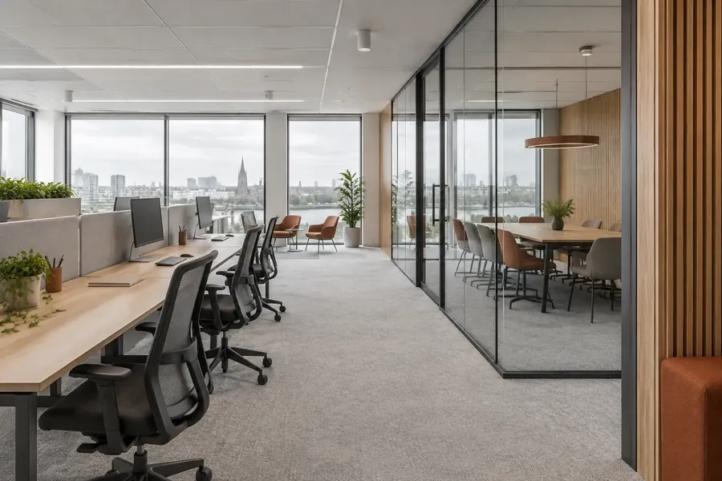

Ремонт офисов и магазинов под ключ
Планировка, перегородки, потолки, слаботочные сети и отделка. Перечень работ и смету считаем по вашему запросу, цену и сроки записываем в договор.

Сколько стоит
Для офисов, магазинов и фасадов у нас нет готовой ставки за квадратный метр: состав работ зависит от помещения. Пришлите площадь, задачу и, если есть, план. Инженер сделает замер и смету бесплатно, цена и сроки попадут в договор.
Пример: офис IT-компании
Площадь 210 м², 70 дней ремонта в бизнес-центре. Открытая планировка на 30 рабочих мест, перегородки из ГКЛ с шумоизоляцией, стеклянная переговорная, слаботочные сети, подвесные потолки.
Объект и срок указаны так, как они показаны на главной странице сайта. Ваш срок называем после замера и записываем в договор.
Как проходит работа
Замер и смета
Инженер замеряет объект, считает смету и записывает цену и сроки в договор. Выезд замерщика бесплатный и ни к чему не обязывает.
Основа под чистовую
Штукатурка стен по маякам, полусухая стяжка, электропроводка и водоснабжение. Вы проверяете этап и подписываете акт.
Фото и видео до стяжки
Скрытые узлы снимаем на фото и видео и присылаем в мессенджер до заливки стяжки. Прораб на объекте каждый рабочий день.
Покрытия и двери
Плитка, ламинат или кварцвинил, покраска, плинтусы, розетки, двери. Каждый этап снова принимаете вы.
Сдача
Вывозим мусор, моем окна и полы. Если сдача затянулась по нашей вине, неустойка вычитается из последнего платежа.
Условия работы
Цена не растёт
Цена и сроки записываются в договор. Если инженер ошибся в расчётах, недостающие черновые материалы и работы мы берём на себя.
Платите за принятое
Вы проверяете завершённый этап (стяжку, проводку, плитку), подписываете акт и только после этого оплачиваете его.
Неустойка за просрочку
За каждый день задержки по нашей вине действует неустойка по договору, её сумма вычитается из финального платежа.
Гарантия 3 года
На работы, по договору. Фотоотчёт присылаем каждый день, скрытые узлы показываем на фото и видео до заливки стяжки.
Частые вопросы
Сколько стоит выезд замерщика?
Ничего. Выезд замерщика и смета бесплатные, вы не обязаны заключать договор.
Что, если смета вырастет во время ремонта?
Цена фиксируется в договоре и после подписания не растёт. Если инженер ошибся в расчётах, недостающие черновые материалы и работы мы берём на себя.
Вы делаете офисы и магазины?
Да, работаем с коммерческими объектами и фасадами. Например, сдали офис IT-компании на 210 м². Полный перечень работ и смета считаются по запросу.
Сколько стоит ремонт офиса за квадратный метр?
Единой ставки нет: цена зависит от состояния помещения и состава работ. Считаем после замера и фиксируем в договоре.
Как оплатить ремонт офиса?
По этапам: вы принимаете завершённый этап, подписываете акт и после этого оплачиваете его.
Рассчитаем смету на ваше помещение
Оставьте телефон или ник в мессенджере и назовите площадь: договоримся о бесплатном замере.